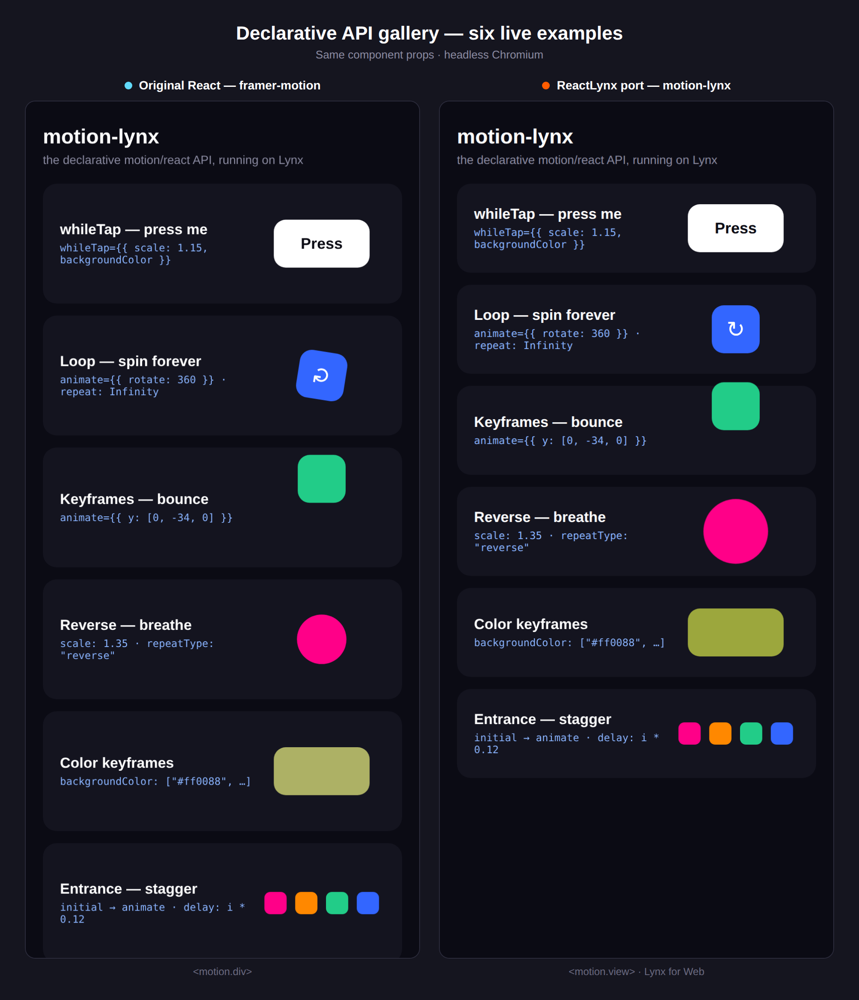
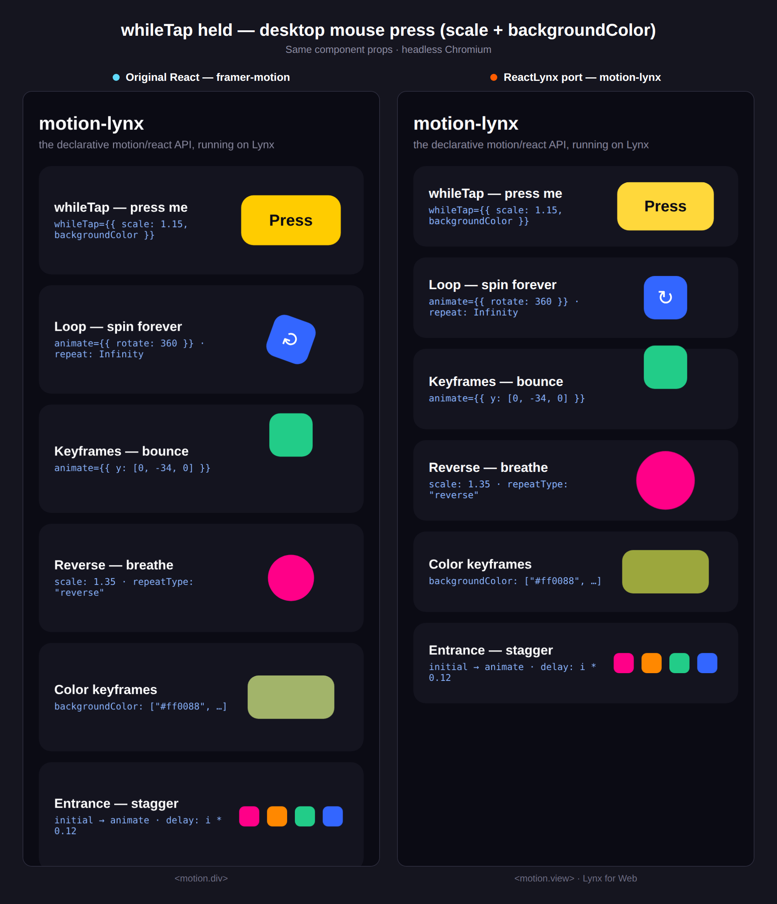

Lynx already ships the imperative Motion.dev engine
(element.animate()). This port adds the missing
declarative layer — <motion.view animate={…}> —
so the ReactLynx authoring API is identical to the original React
motion/react. Everything below runs live; open both and compare.
<motion.div> in a normal React app.<motion.view> rendered by the Lynx web runtime.The reference scene is authored twice. A diff shows the only differences are the import source and the element names.
| Original React (web) | ReactLynx port | |
|---|---|---|
| import | import { motion } from "framer-motion" | import { motion } from "./motion" |
| elements | <motion.div> / <span> | <motion.view> / <text> |
// identical in both — only div→view / span→text changes around it <motion.view initial={{ opacity: 0, y: 60, scale: 0.4 }} animate={{ opacity: 1, y: 0, scale: 1, rotate: i * 90 }} transition={{ duration: 0.8, delay: i * 0.15, ease: "easeOut" }} whileTap={{ scale: 1.15, backgroundColor: "#ffcc00" }} />
Both editions built, served, and screenshotted in headless Chromium, with the same component props. Left = original React · right = ReactLynx port. (The looping cards run on independent clocks, so their phase differs frame to frame — but the layout, easing, and behaviour match.)

